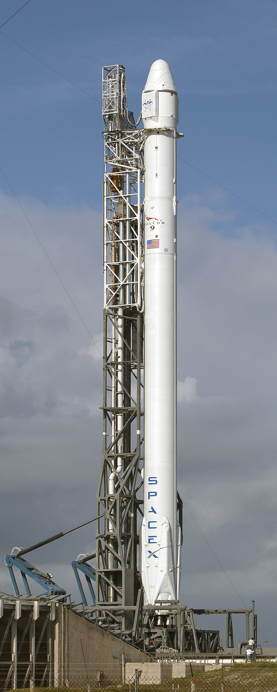

Falcon 9

Falcon 9, merkezi Kaliforniyanın Hawthorne şehrinde olan SpaceX şirketi tarafından tasarlanıp geliştirilen yeniden kullanılabilir bir fırlatma araçları ailesidir. Bu fırlatma araçları ailesi Falcon 9 v1.0, Falcon 9 v1.1, Falcon 9-R'den oluşmaktadır. Bu yörüngeye-iki-aşamada-çıkan aracın her iki aşaması için de güç, yakıt olarak sıvı oksijen (LOX) ve roket-sınıfı kerosen (RP-1) kullanan roket motorları tarafından sağlanır. Falcon 9'un şu anki haliyle alçak Dünya yörüngesine 13150 kilogram (28990 lb) ağırlığında ve yer istasyonu transfer yörüngesine 4,850 kilogram (10,690 lb) ağırlığında görev-yüklerini taşıyabilmektedir. Her üç Falcon 9 aracı da orta ölçekteki fırlatma sistemleri sınıfındadır.
Falcon 9 ve Dragon kapsülü ikilisi birlikte 2008 yılında, NASA'dan UUİ'ye (ISS) malzemeleme götürmek için, Ticari Yörüngesel Taşımacılık (COTS) programı çerçevesinde, Ticari İkmal Hizmetleri (CRS) sözleşmesini kazandılar. UUİ'ye ilk ticari ikmal uçuşu 2012 Ekim ayında fırlatılmıştır. İlk uyarlama olan 1.0 tasarımı 2013 yılında kullanım kalana kadar toplamda beş uçuş gerçekleştirmiştir.
SpaceX bu günlerde iyileştirilmiş ve yüzde 60 daha ağır olan bir Falcon 9 fırlatma aracı -Falcon 9 v1.1- kullanmaktadır, bu hali ilk defa 2013 Eylül ayındaki, Falcon 9 uçuşlarının altıncısı olan ispat uçuşunda fırlatılmıştır.[9] Falcon 9 v1.1 uyarlaması Falcon Heavy fırlatma aracına temel oluşturacaktır. Falcon 9 ayrıca,Ticari Mürettebat Nakil Yeteneği sözleşmesi çerçevesinde UUİ'ye NASA astronotlarını taşıyabilmek için, insanlı uçuşa uygunluk alacaktır.Geliştirme ve Üretim
Soldan sağa, Falcon 1, Falcon 9 v1.0, Falcon 9 v1.1'in üç türevi, Falcon 9 v1.2'in üç türevi, Falcon 9 Block 5'in iki türevi, ve Falcon Heavy (tüm türevlerin hepsi uçurulmadı)
Sermaye
SpaceX bir önceki fırlatma aracı olan Falcon 1'i tamamen kendi parasıyla geliştirmişken, Falcon 9'un geliştirilmesi; Ticari Yörüngesel Taşımacılık Hizmetleri (COTS) programı çerçevesinde, NASA'nın sağladığı parasal kaynak ile başlamıştır. SpaceX 2006 yılında "ticari yörüngesel taşıma hizmetini geliştirip ispat etmek" üzere doğrudan-kaynak-sağlanan, üç adet ispat uçuşu da içeren, "Uzay Yasası Anlaşması"na (UYA) hak kazandı. NASA ayrıca, 2008 yılında UUİ'ye Ticari İkmal Hizmetlerinin fırlatmalarını (ilk uçuştan iki yıl önce) satın alarak fırlatma aracının ana müşterisi olmuştur; 1.6 milyar $ değerindeki sözleşme, UUİ'ye malzeme götürüp ve UUİ'den malzeme getirecek olan en az 12 adet görev içermekteydi..
2011 yılında, SpaceX Falcon 9 v1.0 için geliştirme maliyetinin 300 milyon $ civarında olacağını öngörmüştü.
NASA'ya göre , SpaceX eğer geleneksel bir artı-maliyet sözleşme türü yaklaşım sergilemiş olsaydı,
maliyetler 3.6 milyar $ civarında olurdu.
2014 yılında, SpaceX Falcon 9 ve Dragon kapsülü için toplam geliştirme maliyetini açıkladı.
NASA toplamda 396 milyon $ kaynak sağlarken SpaceX roket ve kapsül geliştirme çabaları için
450 milyon $'dan fazla kaynak sağlamıştır.